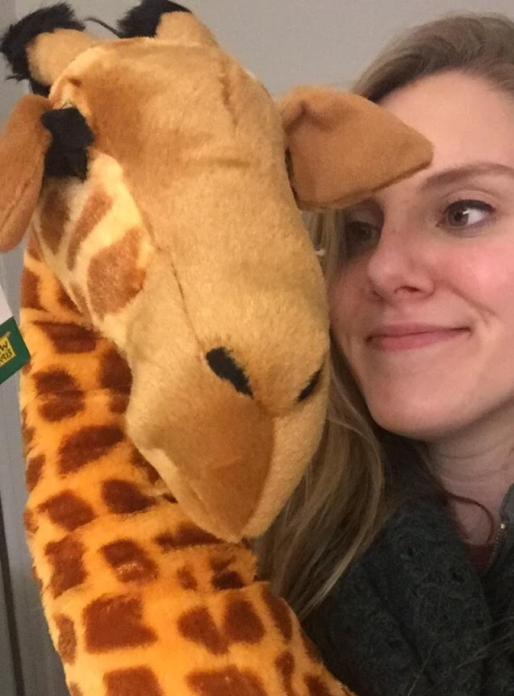

It all began with a trip to Kroger. It was the pre-Valentine's Day season, and my heart was taken by a thirty-dollar stuffed giraffe with a heart shaped nose next to the produce isle. I wasn't able to forget about him, and I told my mom about my broken heart on the phone the next night. She laughed at me, mocking my lameness and lack of significant other to buy it for me.
A week later, I got home from campus at 2 a.m., stressed, tired, and ready for bed. There was a Baby's-R-Us box waiting outside our front door with my name on it. Confused, I brought it inside; last time I checked I wasn't expecting a baby nor a package from one. I used a knife from the dirty side of the sink to open it, too tired to scower around for my scissors. Inside was the ugliest giraffe I had ever seen. His neck was too droopy to support his weight, half the hair surrounding his eye was falling out, and his hooves resembled crab claws.
He was perfect.
My mom called me the next morning, casually (kind of yelling) asking if I got a package. She screamed when I told her he came. She had ordered him immediately after we got off the phone last week, but the snow storm prevented him from getting to me by Valentine's Day.
I was three when I got my first giraffe and twenty when I got my latest one. Shoutout to Travis for being the best, most hideous, Valentine a girl could ask for
My mom is going to be giving me giraffe perophenalia till I'm seventy. We'll be singing the "Sunshine" song then too.